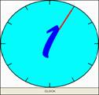

|
|
| Home > Select a Unit > Unit 4: ÌGBÀ ÀTI ÀKÓKÒ | |

TELLING TIME IN YORÙBÁ
HOW
TO TELL TIME IN YORUBA IS PROVIDED HERE IN FOUR PARTS:
I. QUESTIONS FOR INQUIRING ABOUT THE TIME:
What
time is it? KÍ NI AAGO WÍ? tàbí KÍ
NI AAGO SO?
AAGO MÉLÒÓ NI Ó LÙ? tàbí AAGO MÉLÒÓ LÓ LÙ?
II. KNOWLEDGE NEEDED TO TELL TIME:
a. Numbers 1-29 in their cardinal forms:
kan; méjì; mcta; m}rin, márùn-ún, m}fà, méje, m}jv,
m}sàn-án, m}wàá àti b}| b}| lv (etc.)
b. Key words:
aago / agogo: watch/time ìx}jú: minute
kvjá: past / after the hour wákàtí: hour
kù: remains
/ before the hour wí / sv: to
say
ààbz: half (In telling time, ààbz refers to half past the hour).
c. Division of the hour in Yoruba:
You should take every hour of the clock as
divided into two equal parts in Yoruba with a median:
1 to 29 minutes past the hour half hour 1 to 29 minutes to the hour
KVJÁ ààbz KU
d. Periods of the day in Yoruba:
àárz morning zsán afternoon
ìrzl} evening al} night
<òru during
the night
III. FORMAT FOR TELLING TIME IN YORUBA:
- on the hour: the hour period
of the day
- past the hour: the hour period of the day past number of minutes
- half past the hour: the hour half period of the day
- before the hour: the hour period of the
day before number of minutes
IV. EXAMPLES:
ÌBÉÈRÈ: KÍ NI AAGO WÍ? tàbí KÍ
NI AAGO SO?
AAGO MÉLÒÓ NI Ó LÙ? tàbí AAGO MÉLÒÓ LÓ LÙ?
ÌDÁHÙN:
1:00 pm: Aago kan zsán
1:00 pm: Aago kan zsán
1:10pm: Aago kan kvjá ìx}jú m}wàá zsán
1:20pm: Aago kan òsán kvjá ogun ìx}jú
1:25pm: Aago kan òsán kvjá ix}jú
márùndínlógún
1:30pm: aago kan ààbò
zsán*
1:40pm: Aago méjì òsán ku ogun ìx}jú
1:50pm: Aago méjì òsán ku ix}jú mewa
1:55pm: Aago méjì òsán ku ix}jú
marun-un
2:00pm: Aago méjì zsán
Notes: -
The period of the day might not always be overtly stated.
*It is also possible to have the period of the
day at the end
IX{ XÍXE /PRACTICE EXERCISE:
KÍ NI AAGO WÍ?
1. 8:34
am: 2.
6:26 pm:
3. 10:13
pm: 4. 5.37 am:
5. 3:40
pm: 6. 12noon:
AAGO
MÉLÒÓ NI O MAA N (USUALLY) ..........
1. Sùn
ní al} 2.
Jcun
ní àárz
3. Kàwe
lójoojúm<(everyday) 4. Wo tclifíxvnnnù ni ìrzl}
| © African Studies Institute, University of Georgia. |